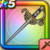

フロストスティンガー
攻略班 7.5点 / ヴァイパーファングラリホーフロストハントヴェノムスラッシュアイシクルバースト
くわしい特徴
【レベル別習得スキル】 Lv1【魔法戦士】すばやさ+5 Lv1ヴァイパーファング（消費MP：5）刃に猛毒を宿し敵1体に威力130%の斬撃ダメージを与えたまに猛毒を与える Lv10ラリホー（消費MP：10）敵1体を眠りにさそう Lv15フロストハント（消費MP：16）敵1体に120％の攻魔複合のヒャド属性斬撃ダメージ。眠り、猛毒状態の敵には威力が240％に上がり、攻撃後に眠り、猛毒を解除する Lv20ヴェノムスラッシュ（消費MP：24）敵全体に240％のドルマ属性斬撃ダメージを与え、確率で猛毒にする Lv30アイシクルバースト（消費MP：31）敵全体に185％の攻魔複合のヒャド属性斬撃ダメージを与え、確率で眠らせる Lv35虫系へのダメージ+5% Lv40悪魔系へのダメージ+5% Lv45こうげき魔力+6 Lv50攻撃力+12 【限界突破スキル】 1凸スキルの斬撃・体技ダメージ+5% 2凸スキルの斬撃・体技ダメージ+5% 3凸スキルの斬撃・体技ダメージ+5% 4凸スキルの斬撃・体技ダメージ+5%